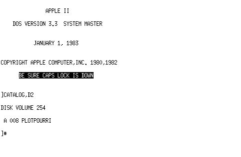

Apple IIc Emulator Update
I have made a minor update to my a2c emulator. The version has been bumped to 0.2 and can be downloaded here or from the GitHub, GitLab or Codeberg repositories.
Firstly I discovered a bug. When booting AppleDOS 3.3 it is loading Integer BASIC into RAM which can be used instead of Applesoft BASIC by typing the "INT" command. Except that loading never happened because those RAM writes were ignored. This has now been fixed.
Secondly I noticed the performance of floppy disk operations were kind of sluggish compared to the real hardware. I tracked this down to a fault in the emulated IWM implementation where the disk access routines thought that the drive motor was not enabled, resulting in long timeouts. Performance should now be improved.
Finally I added support for the secondary floppy disk drive, which can now be loaded with an image from the command line arguments or the debugger. The "CATALOG,D2" command can be used to access the secondary drive from AppleDOS.
